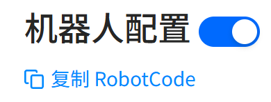
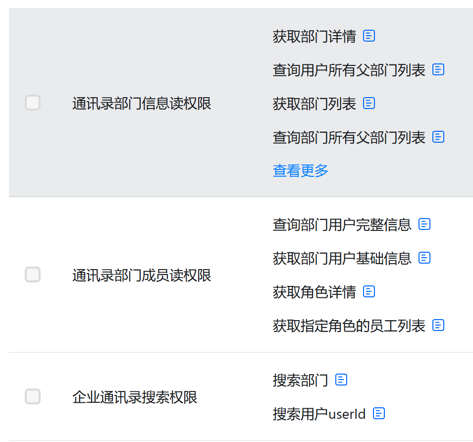
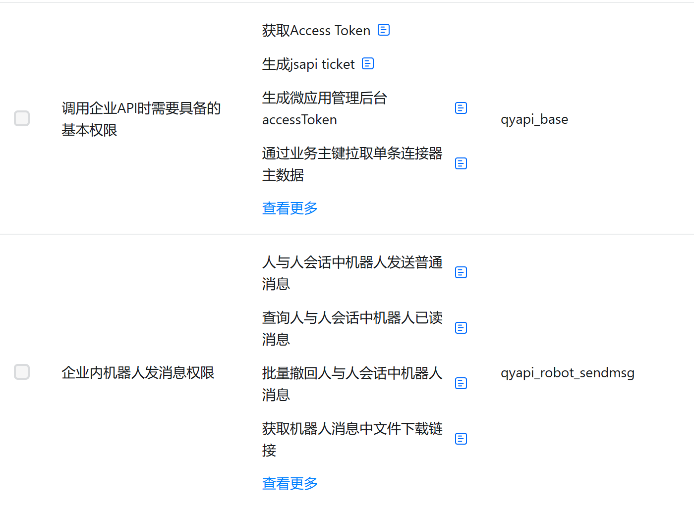
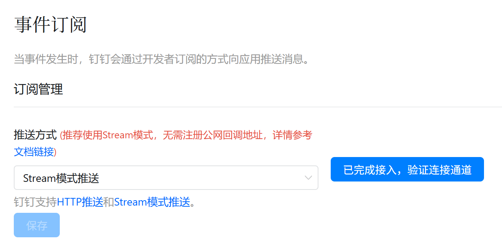

1
创建企业内部应用
登录钉钉开放平台，创建一个 企业内部开发应用，并给它添加机器人能力。申请入口：钉钉开放平台
- 创建完成后，记录
AppKey、AppSecret、robotCode
robotCode 获取方法
- 应用页面左侧点击“机器人与消息推送”
- 右侧页面中点击“复制 RobotCode”
- 右侧页面最下端“消息接收模式”选择“Stream 模式”

钉钉这边最关键的是企业内部应用、机器人能力，以及主动发送所需的 robotCode 和通讯录权限。
robotCode先在钉钉开放平台把应用和权限准备好。
登录钉钉开放平台，创建一个 企业内部开发应用，并给它添加机器人能力。申请入口：钉钉开放平台
AppKey、AppSecret、robotCoderobotCode 获取方法

如果你还要支持桌面端主动给成员发消息，建议至少开通这些方向的权限：


进入应用的事件订阅页面，选择 Stream 模式推送，然后保存。

能力和权限配好后提交发布，等待应用生效。
钉钉侧准备好以后，再回到软件里填写配置。
| 字段 | 怎么填 |
|---|---|
| 启用钉钉桥接 | 打开 |
| AppKey | 填写钉钉开放平台里的 AppKey |
| AppSecret | 填写钉钉开放平台里的 AppSecret |
| robotCode | 填写钉钉开放平台里的 robotCode |
| 默认工作目录 | 可选，不填也可以 |
| 历史会话数量 | 可选，默认通常就够用 |
建议按这个顺序验证，最省时间。
用钉钉测试账号给机器人发一条普通文本，确认 Hydro Desktop 能收到消息，并且机器人能正常回复。
把机器人加入测试群，在群里发消息，确认桌面端能收到，并且群聊消息不会错落到某个单聊用户会话里。
在 Hydro Desktop 会话工具栏里点击钉钉发送入口，选择成员发一条消息；然后再从钉钉回一条，确认它能回到原会话。
配置失败时，先看这些最常见原因。
先检查应用是不是企业内部应用，机器人能力有没有开启，应用是否已经发布生效，以及 robotCode 是否已经填写。
通常先检查 robotCode 是否已填写、通讯录权限是否已开通，以及权限改完后是否重新发布了应用。
MissinguserIds 怎么办？
通常说明当前目标被按单聊发送，但平台要求成员 ID。优先检查目标是不是群聊、身份建立是否正确，以及 robotCode 是否配置正确。
多台桌面端同时连接同一个钉钉机器人时，最容易出现重复回复、抢消息或回复错乱。